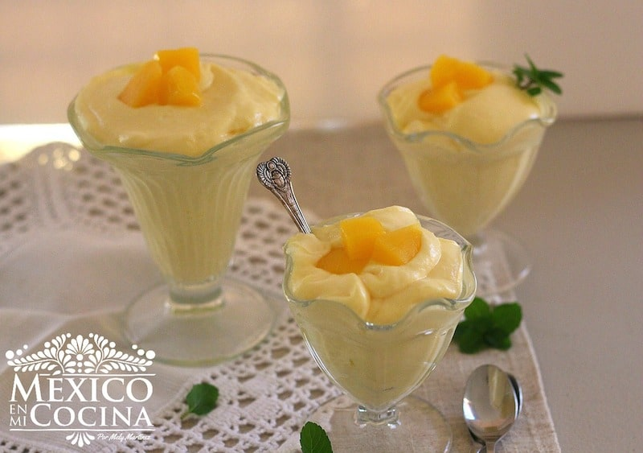
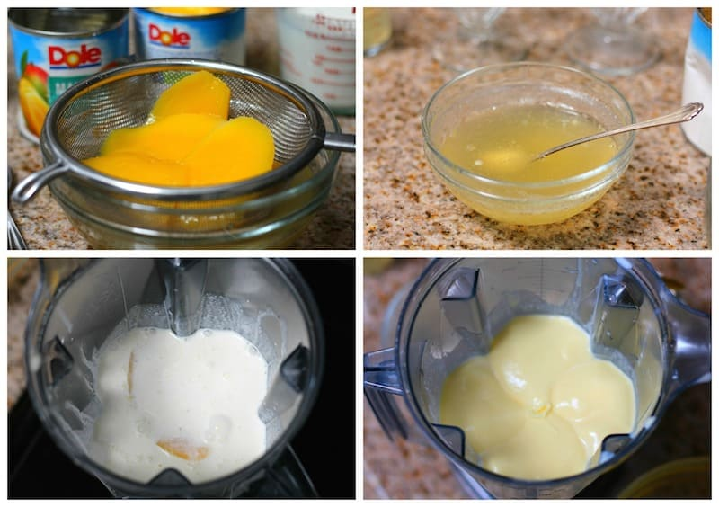

Lava y pela un mango. Toma dos rebanadas de mango las cortas en cuadritos o cubitos para adornar el mousse.
Coloque la ½ taza de jarabe en un tazón pequeño y revuelve muy bien con la gelatina sin sabor hasta que esta se disuelva completamente.
Vacía esta mezcla en la licuadora o procesador de alimentos junto con el resto de las rebanadas de mango, la crema para batir y la leche condensada; licua por aproximadamente 1 minuto o hasta que la mezcla este uniforme y se haya espesado.
Sirva en pequeñas tacitas para postre y adorna con los cubitos de mango que habías reservado.